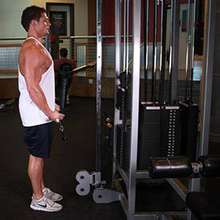

Biceps WORKOUT EXERCISES
Biceps Anatomy
When starting on a muscle-building program, one of the key body parts that many people want to place a large focus on are the biceps. The biceps tend to be a highly noticed muscle group by others, so if you have nicely developed arms, people are going to know you're on top of your workout game.
It is important to keep in mind that in actuality the triceps muscle comprises a very large component of the arm, so you must not neglect your triceps work either, which will then give you the perfect balance of what you need to see optimal results.
When you are aiming for maximum size, another important point to note is that lifting heavy must be placed as a priority. Since building more size is a combination of a heavy surplus, enough volume, and plenty of calories, it's a wise decision to focus on exercises that will allow you to lift the heaviest weight possible.
Usually for most people this will be exercises such as rows and lat-pulldowns, both of which target the biceps muscles as well. If you are including these regularly with your workout program and then adding in other exercises that are specifically targeted towards the biceps muscles you will be right on track for developing the best arms you can.
- Barbell Curl
- Stand up with your torso upright while holding a barbell at a shoulder-width grip. The palm of your hands should be facing forward and the elbows should be close to the torso. This will be your starting position.
- While holding the upper arms stationary, curl the weights forward while contracting the biceps as you breathe out. Tip: Only the forearms should move.
- Continue the movement until your biceps are fully contracted and the bar is at shoulder level. Hold the contracted position for a second and squeeze the biceps hard.
- Slowly begin to bring the bar back to starting position as your breathe in.
- Repeat for the recommended amount of repetitions.
Variations:
- You can also perform this movement using a straight bar attachment hooked to a low pulley. This variation seems to really provide a good contraction at the top of the movement.
- You may also use the closer grip for variety purposes.
- Incline Dumbbell Curl
- Sit back on an incline bench with a dumbbell in each hand held at arms length. Keep your elbows close to your torso and rotate the palms of your hands until they are facing forward. This will be your starting position.
- While holding the upper arm stationary, curl the weights forward while contracting the biceps as you breathe out. Only the forearms should move. Continue the movement until your biceps are fully contracted and the dumbbells are at shoulder level. Hold the contracted position for a second.
- Slowly begin to bring the dumbbells back to starting position as your breathe in.
- Repeat for the recommended amount of repetitions.
- Standing Bicep Cable Curl
- Stand up with your torso upright while holding a cable curl bar that is attached to a low pulley. Grab the cable bar at shoulder width and keep the elbows close to the torso. The palm of your hands should be facing up (supinated grip). This will be your starting position.
- While holding the upper arms stationary, curl the weights while contracting the biceps as you breathe out. Only the forearms should move. Continue the movement until your biceps are fully contracted and the bar is at shoulder level. Hold the contracted position for a second as you squeeze the muscle.
- Slowly begin to bring the curl bar back to starting position as your breathe in.
- Repeat for the recommended amount of repetitions.

Variation:
You can also perform this movement using an E-Z barbell attachment or single handles.
- Reverse Grip Bent-Over Rows
Caution:
- This exercise is not recommended for people with back problems. A Low Pulley Row is a better choice for people with back issues.
- Also, just like with the bent knee dead-lift, if you have a healthy back, ensure perfect form and never slouch the back forward as this can cause back injury.
- Be cautious as well with the weight used; in case of doubt, use less weight rather than more.
Variations:
You can perform the same exercise using a pronated (palms facing out) grip or using dumbbells.
- Concentration Curls
- Sit down on a flat bench with one dumbbell in front of you between your legs. Your legs should be spread with your knees bent and feet on the floor.
- Use your right arm to pick the dumbbell up. Place the back of your right upper arm on the top of your inner right thigh. Rotate the palm of your hand until it is facing forward away from your thigh. Tip: Your arm should be extended and the dumbbell should be above the floor. This will be your starting position.
- While holding the upper arm stationary, curl the weights forward while contracting the biceps as you breathe out. Only the forearms should move. Continue the movement until your biceps are fully contracted and the dumbbells are at shoulder level. Tip: At the top of the movement make sure that the little finger of your arm is higher than your thumb. This guarantees a good contraction. Hold the contracted position for a second as you squeeze the biceps.
- Slowly begin to bring the dumbbells back to starting position as your breathe in. Caution: Avoid swinging motions at any time.
- Repeat for the recommended amount of repetitions. Then repeat the movement with the left arm.
Variations:
This exercise can be performed standing with the torso bent forward and the arm in front of you. In this case, no leg support is used for the back of your arm so you will need to make extra effort to ensure no movement of the upper arm. This is a more challenging version of the exercise and is not recommended for people with lower back issues.
- Hammer Curls
- Stand up with your torso upright and a dumbbell on each hand being held at arms length. The elbows should be close to the torso.
- The palms of the hands should be facing your torso. This will be your starting position.
- Now, while holding your upper arm stationary, exhale and curl the weight forward while contracting the biceps. Continue to raise the weight until the biceps are fully contracted and the dumbbell is at shoulder level. Hold the contracted position for a brief moment as you squeeze the biceps. Tip: Focus on keeping the elbow stationary and only moving your forearm.
- After the brief pause, inhale and slowly begin the lower the dumbbells back down to the starting position.
- Repeat for the recommended amount of repetitions.
Variations:
There are many possible variations for this movement. For instance, you can perform the exercise sitting down on a bench with or without back support and you can also perform it by alternating arms; first lift the right arm for one repetition, then the left, then the right, etc.